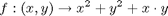

Doughnut example
This example is meant to show how to define a 2-dimensional inversion problem, in order to solve it using vsivia.
We will consider the function f, defined as follows:

The purpose will consist in determining an inner and an outer enclosures of the inverse image of f on [1,2], using paving. The box [-3,3]x[-3,3] will be taken as an initial outer enclosure of the sought-after solution set.
First of all, parameters for vsivia shall be specified in a class inherited from vsivia_parameters.
classdef doughnut_parameters < vsivia_parameters
properties
algorithm tells vsivia the kind of problem to be solved, here inversion.
algorithm = 'inversion' ;
U0 indicates the initial box that is tested at first and then possibly bisected. In this example, we consider the box [-3,3]x[-3,3].
U0 = [ -3 3 ; -3 3] ;
Y0 gives the value to be inverted. Here, we consider [1,2].
Y0 = [ 1 2 ] ;
epsilon specifies the accuracy wanted for the result. A relative epsilon of 5 %, with respect to the size of U0, is chosen: vsivia will not bisect any boxes smaller than 5 % of the size of U0.
epsilon = '5 %' ;
end % properties
At last, the method compute is overriden in order to define the function f. Input variables of compute appear here separetely.
methods (Static)
function z = compute(x,y)
z = x^2 + y^2 + x*y ;
end
end % methods
end % classdef